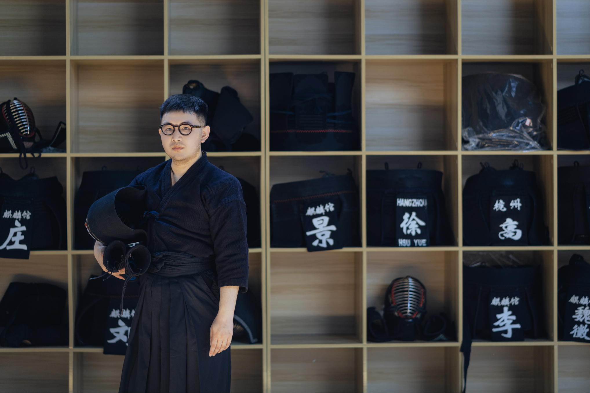
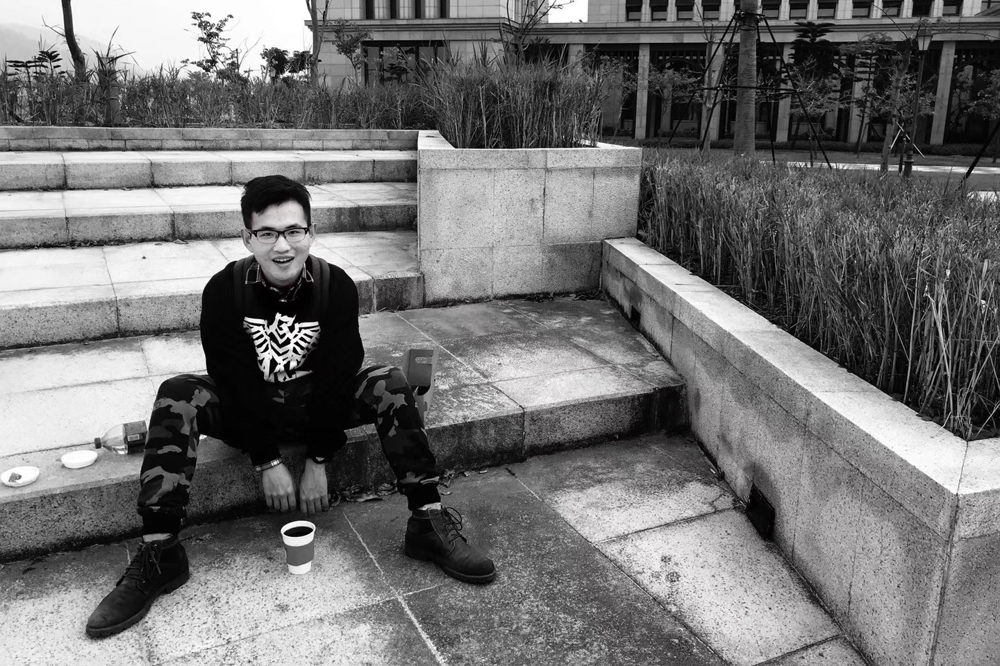
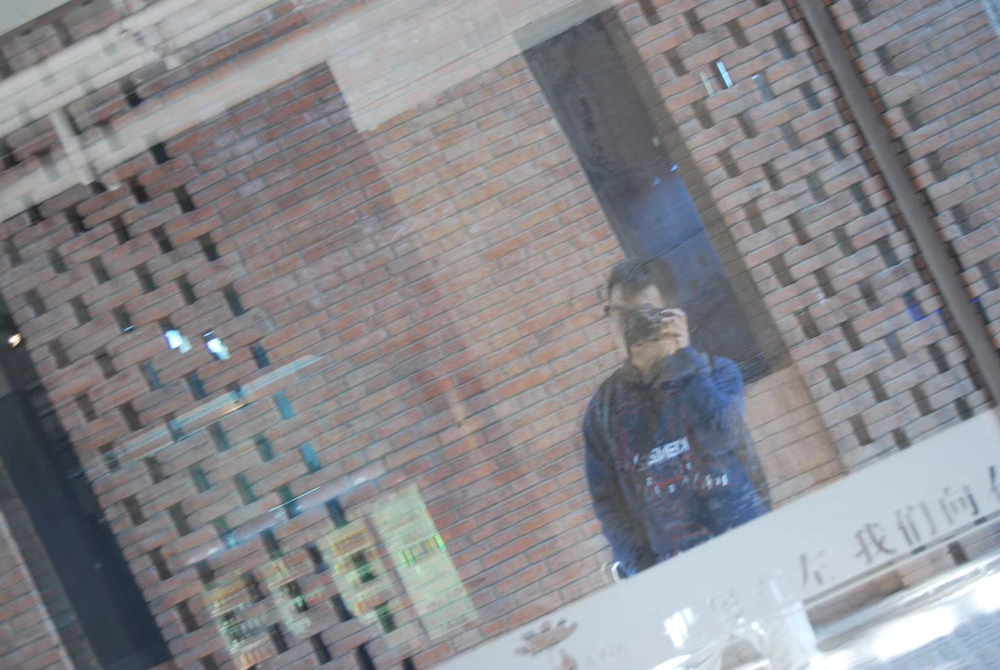
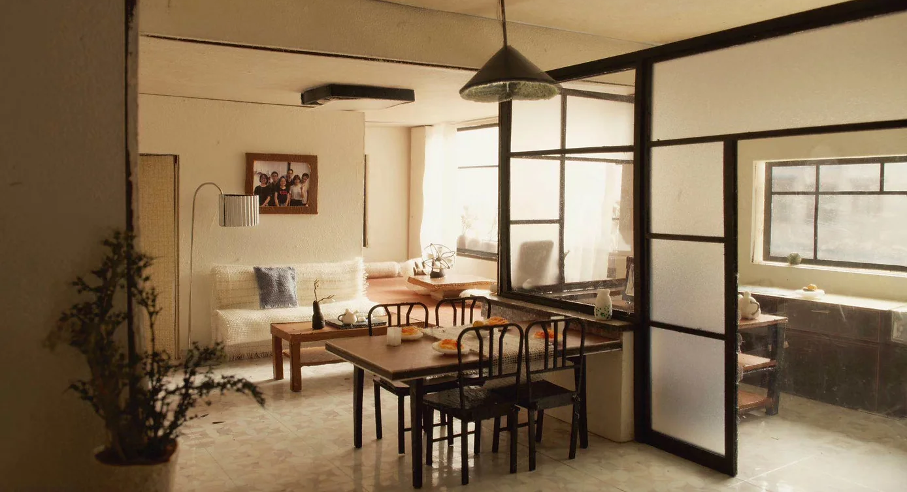
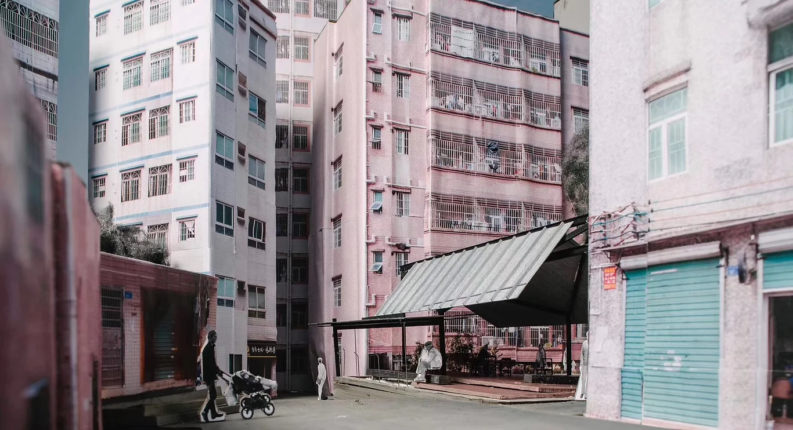
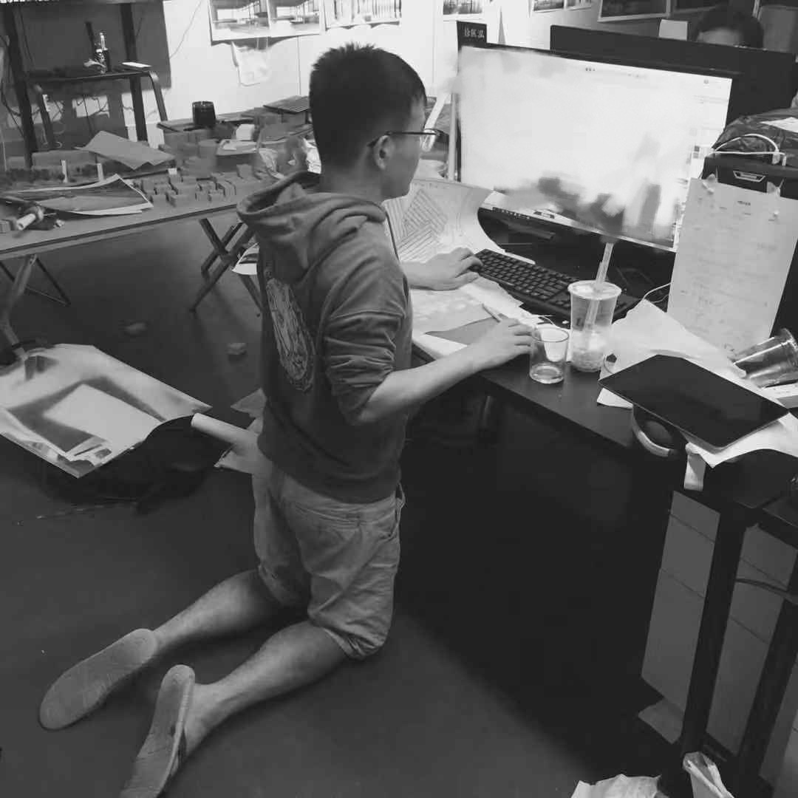
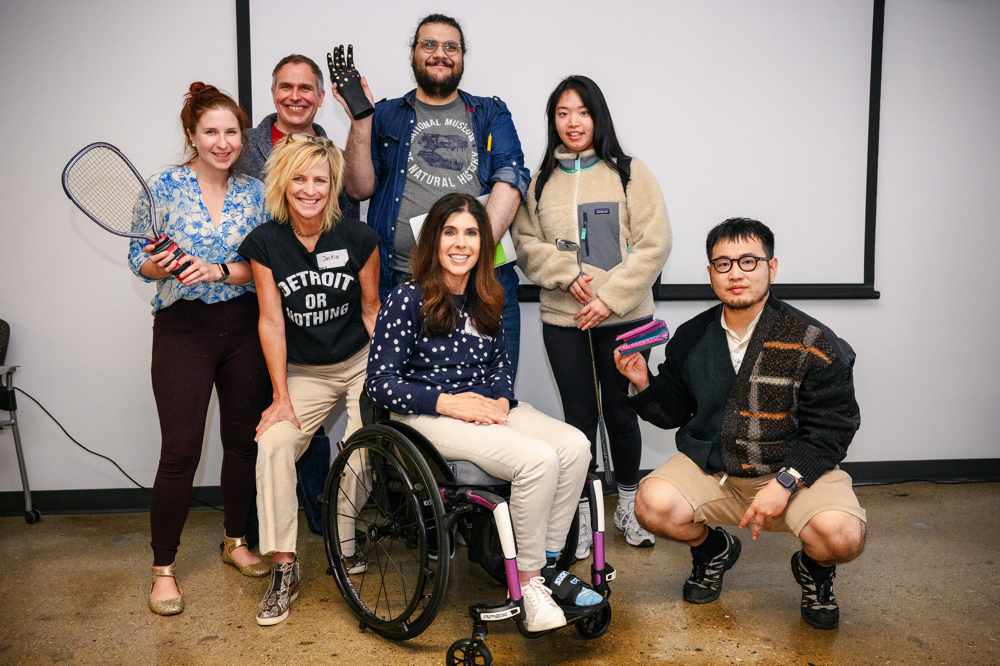

Some of the past organizations that I worked with:
Eaton Corporation
Heygen
Infloww
ColdMe
HIL architects
Justice Future
Detroit Small Business Consultation
Capital Disdrict Library of Lansing
COIL Connect for Virtual Exchange
Fred A. and Barbara M. Erb Family Foundation
Xi'an University of Architecture and Technology
Hard skills:
Figma
Webflow
Photoshop
Illustrator
InDesign
Python
Html/CSS
Javascript
Tableau
Adobe XD
Sketch
Rhino
AutoCad
Soft skills:
Estimations
Time Management
Risk management
Teamwork
Critical Thinking
Problem-solving
Languages:
English – Advanced
Mandarin – Native
When I began revamping my website, I aimed to create something truly mine, not just another 2026 UX portfolio boasting about oneself in seek of a job. Honestly? That's not me. I'm simply Kyle, nothing else.

Below is a comment from my former manager, Olivia Chen.
"Kyle is passionate about the UX, puts problem solving at the center and can think from end-to-end perspective of various touch points and bring new ideas."
How I became a designer?
My path to becoming a passionate architect and artist started back in 2013. As a 15-year-old, I was captivated by the beauty of architecture, spending countless hours sketching and exploring architectural designs. I stumbled upon a world that combined artistry with functionality, a world I desperately wanted to be a part of, yet had no clear path to enter. While my peers were immersed in regular studies in Chinese high schools, I was busy learning about actual building and participated in several voluntary building workshop to build a better physical environment for the under treated population in Hangzhou. This period was crucial for me; the joy of creating something, of bringing an idea to life, fueled my desire to pursue this field. In 2017, my hobby started paying off. I began designing spaces and art pieces for my dad's business associates, which turned out to be a profitable venture for my pocket money. At 18, my talent caught the eye of a local design studio, leading to my first professional engagement. This marked the beginning of my career as a designer.


Starting the career as a problem-solving designer
A few years later in 2019 I was working part-time as a junior architect for an agency with a focus on urban design. During this period, I was given many opportunities to understand and test the way how architectures, as a kind of design intervention, would change the way how people work, live and feel. This might sound exciting and meaningful in the first place, but it did not take long for me to realize that there's only a limited amount of things architects could do consider all the tremendous cost and process of implementation. Deciding to change my career wasn't easy, but I had to do it. Being an architect limited my options in other fields when it comes to job hunting. So, as a student, I took the plunge into freelancing and began looking for jobs myself. Looking back, it was one of my best decisions. I started with no idea how to manage or get projects, but I learned by trying, making mistakes, learning from them, and trying again.


3-Year adventure in my home
2020 was a landmark year for many, including me. The periodic lockdowns, although restrictive, surprisingly boosted both my personal and career development. I experienced a bit of weight gain, but more importantly, I advanced significantly in my profession. I embarked on various freelance UIUX projects remotely, collaborating with partners across multiple Chinese cities. Additionally, I had the chance to develop a digital platform for a community in Xi'an's Muslim Quarter, a joint venture between my university and the local government.I vividly recall the time when my business partners and I, from a film community, immersed ourselves in extensive research to gain a thorough insight into the business landscape. We worked tirelessly, day and night, to refine and launch our first app. It may seem unremarkable to some, but it wasn't just about the product; it was about our approach. Committing wholeheartedly and charging towards our goal taught me a powerful lesson: “We can accomplish anything we set our minds to; the only barriers are the ones we place on ourselves.”

Large Corps to AI startups
Since 2022, my path has moved from architecture and HCI into designing AI-native products, complex workflows, and product systems. My earlier work at Eaton and HeyGen gave me a foundation in enterprise UX, IoT tools, and AI creation workflows, but my recent focus has shifted toward deeper AI product design.
At Curio Digital Therapeutics, I worked as the founding product designer on AI-driven therapeutic support products, designing across onboarding, CBT-based content, gamification, personalization, design systems, and clinical-product workflows.
At Dify, I’ve been designing for AI application development platforms — from multi-agent workplace concepts and AI-native knowledge systems to enterprise agent configuration flows and reusable components. Across these experiences, I focus on turning ambiguous technical systems into clear, scalable, and human-usable product experiences.

Let's write this chapter together, turning it into a story of growth and success.
My career took a meaningful turn when I moved from architecture into HCI and product design at the University of Michigan. That transition shaped how I work today: I think in systems, structures, and human behavior — and I use design to make complex products easier to understand and use.
Since then, I’ve worked across enterprise tools, AI creation platforms, digital therapeutics, and AI application development systems. My recent work at Curio and Dify has focused on AI-native product experiences, from therapeutic support flows and personalization systems to agent workflows, knowledge systems, enterprise configuration, and reusable product components.
I’m now focused on designing products where AI, workflow, and interaction design come together — turning technical ambiguity into clear, scalable, and human-usable product experiences.